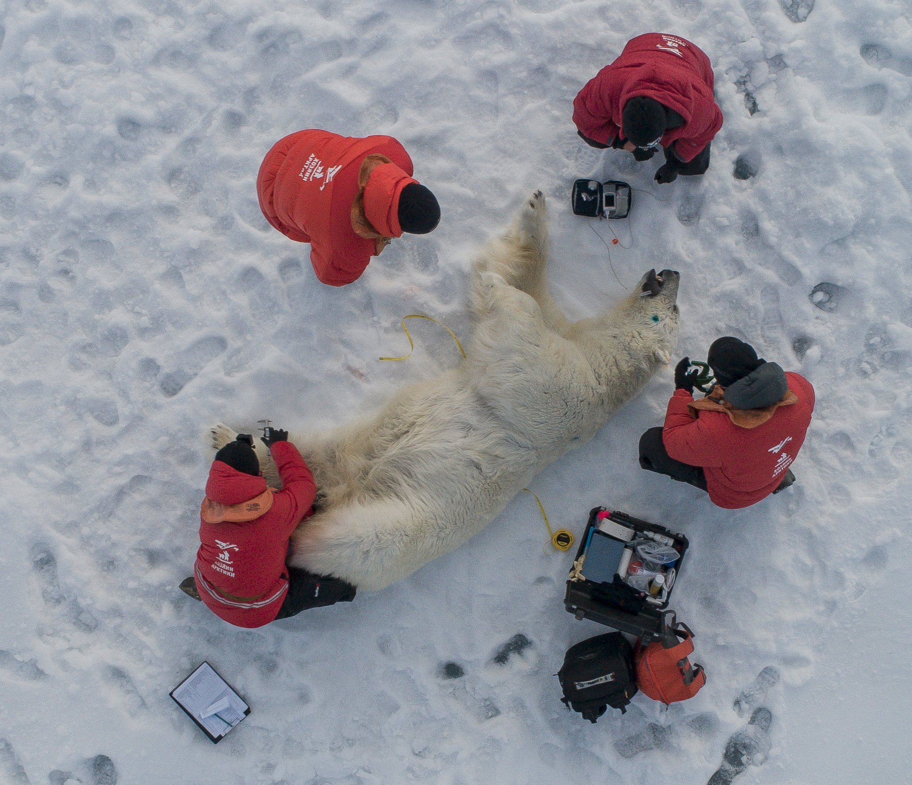
Экология перемещений белого медведя: лёд, снег и вода
«Экология перемещений (movement ecology) живых организмов»
Никита Платонов
с.н.с. ИПЭЭ РАН
14 декабря 2023
Белый медведь
Белый медведь
Самый крупный хищник.
Относится к морским млекопитающим.
19 субполуляций, 25-30 тыс. особей
Природоохранный статус МСОП и Красной Книги РФ (Беликов и Кочнев, 2021).
Среда обитания
Лёд ◉○○○
Среда обитания
Ходят
В очень коротком промежутке времени скорость может составлять 40 км/ч.
В долгосрочном периоде скорость 1-2 км/ч, причем самцы передвигаются медленнее одиночных самок и самок с детенышами (Amstrup et al., 2001).
Лёд ○◉○○
Среда обитания
Охотятся
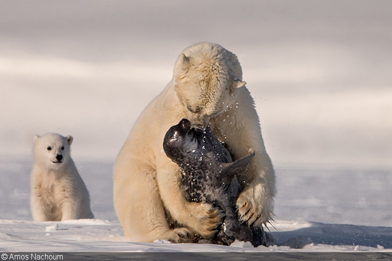
Основный вид жертвы – тюлени.
Лёд ○○◉○
Среда обитания
Отдыхают

Лёд ○○○◉
Среда обитания
Любят кромку льда
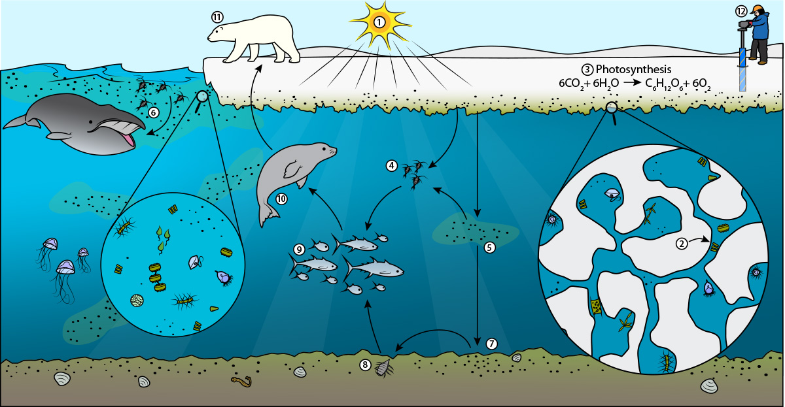
Доступность солнечного света
Распространение причинно-следственной связи по пищевой цепочке
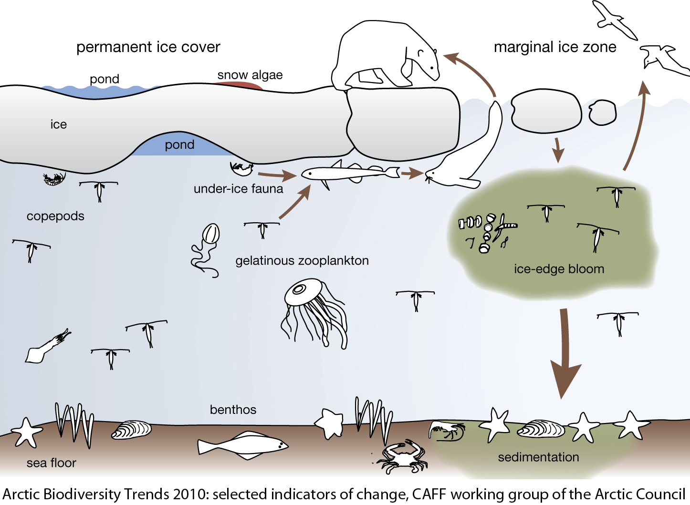
Снег ◉○○
Среда обитания
Ходят по снегу
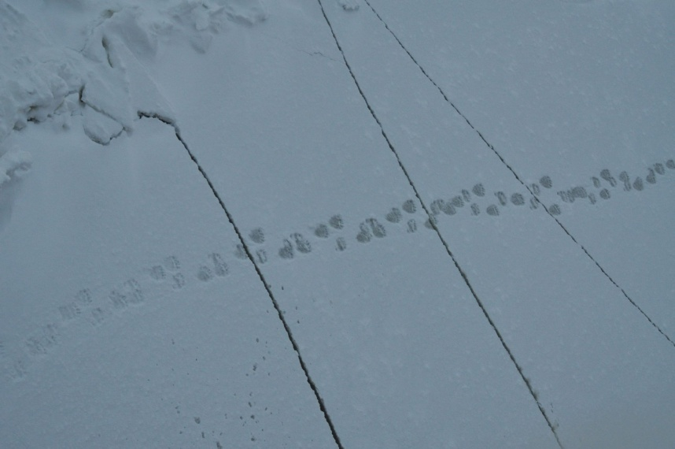
Оставляют следы
оценка полового состава ввиду сильного полового диморфизма
размер выводка
тропление при отловах
выявление превалирующего направления перемещений
Снег ○◉○
Среда обитания
Ходят под идущим снегом
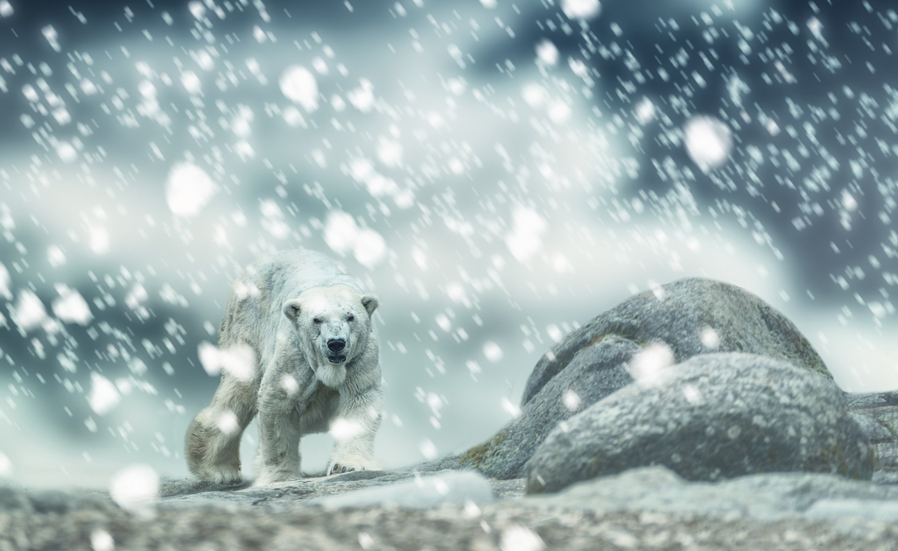
Снег ○○◉
Среда обитания
Залегают в берлоги
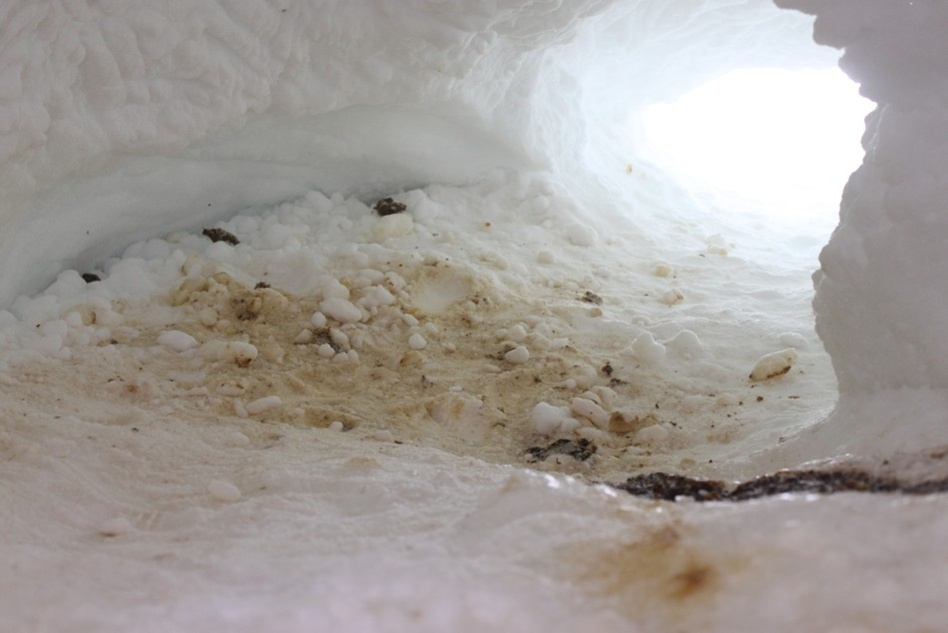
Родовые берлоги с октября-ноября по март-апрель
Как на суше, так и во льдах (Rode et al., 2018)
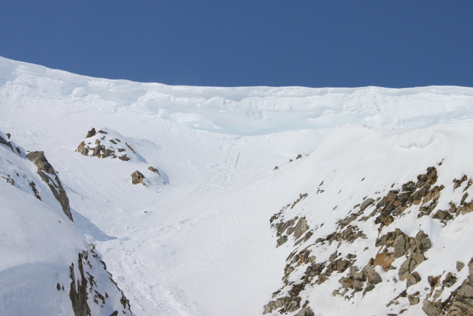
Вода ◉○
Среда обитания
Вода ○◉
Среда обитания
Плавают
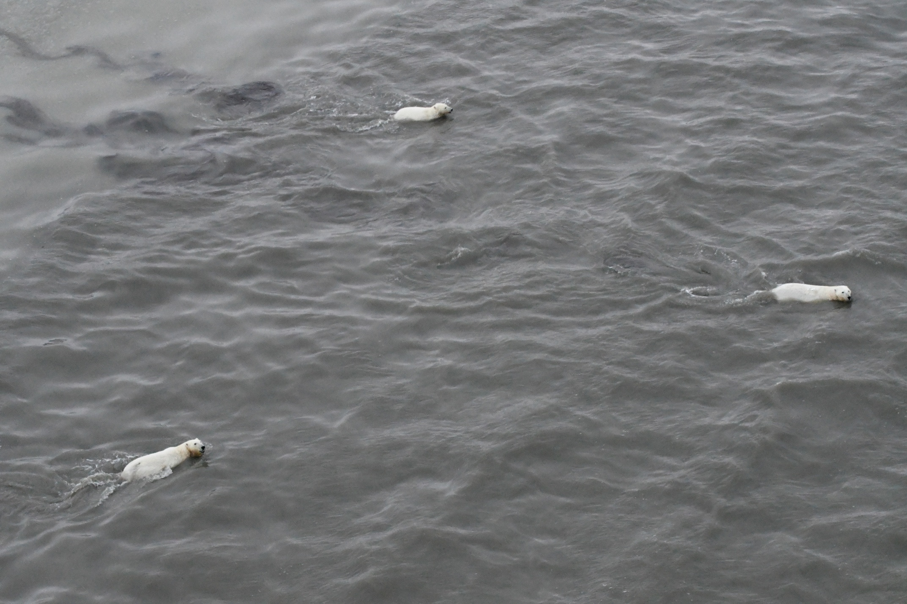
Скорость порядка 10 км/ч.
Сеголетки умеют плавать.
В наших исследованиях неоднократно отмечались «заплывы» на расстояние около 100 км (Рожнов и др., 2017; Платонов и др., 2019)
Суша
Среда обитания
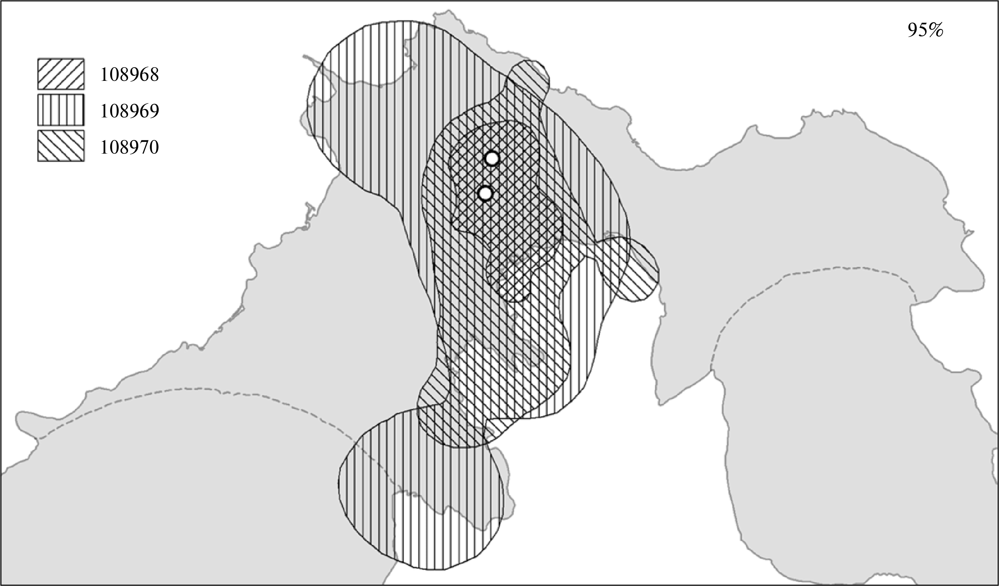
Рисунок из работы (Рожнов и др., 2014)
Родовые берлоги на суше: крутизна и экспозиция склонов, снегонакопление
Альтернатива проведения безледового сезона: меньшие энергозатраты
Антропогенные источники пищи (Рожнов и др., 2014; Платонов и др., 2019)
Причины перемещений
Поиск объектов питания
Причины перемещений
Где тюленей больше, где они доступнее.
Смещение местообитаний ◉○○○○
Причины перемещений
Климатические изменения ледовитости
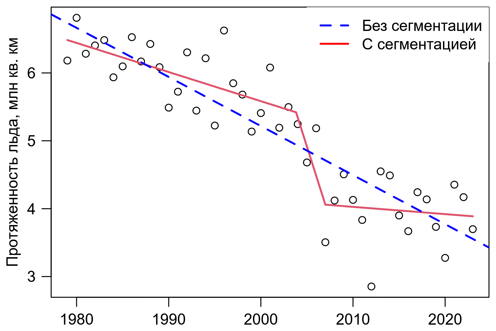
Летний минимум без Гренландского моря (Durner et al., 2009).
Линейный тренд (1979-2023) -72±6×103 км2/год
Сегментация (Muggeo, 2003).
Точки разрыва ~2004 и 2007 гг.
Линейный тренд (2007-2023) -11±6×103 км2/год
Смещение местообитаний ○◉○○○
Причины перемещений
Сезонные изменения ледовитости

«Вертикальная» и «горизонтальная» проекция изменений
Вертикальная: на фиксированную дату больше или меньше льда?
Горизонтальная: для фиксированной площади более ранее/позднее таяние/образование льда?
Смещение местообитаний ○○◉○○
Причины перемещений
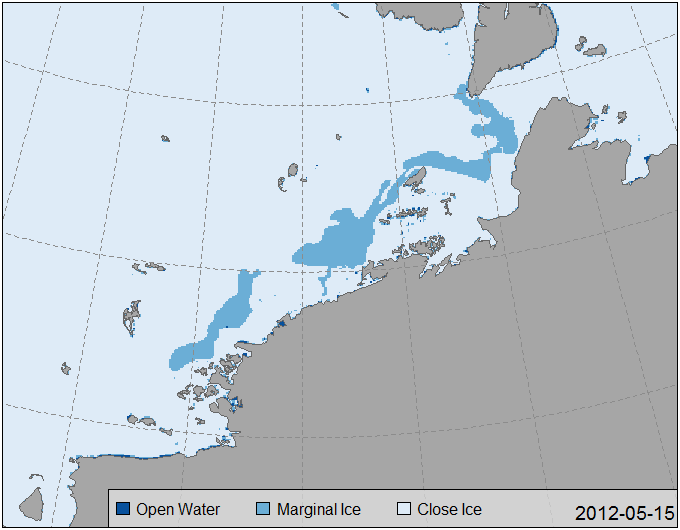
Перемещение самки белого медведя (Рожнов и др., 2017), наложенное на ледовые карты маргинальной зоны льда (US NIC, 2022)
Смещение местообитаний ○○○◉○
Причины перемещений
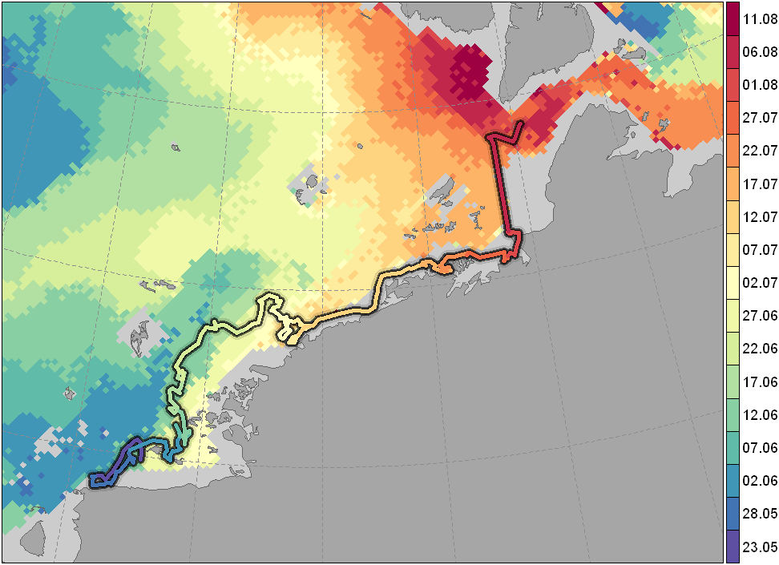
Перемещение самки белого медведя (Рожнов и др., 2017), наложенное на фенологическую карту вскрытия ледяного покрова. Цветовая легенда единая для участков траектории и для фенокарты.
Смещение местообитаний ○○○○◉
Причины перемещений
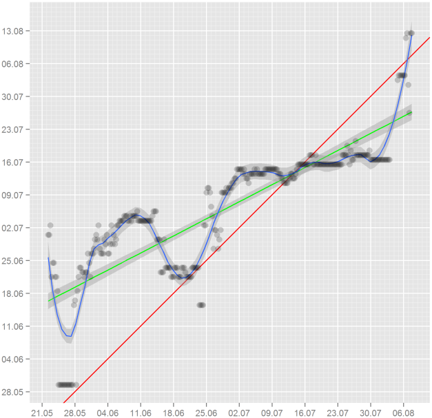
Даты локаций особи (горизонтальная ось) и сроки таяния льда в местах, ближайших к нахождению особи (вертикальная ось).
Красная линия – равенство дат,
Зеленая линия – линейный тренд,
Синяя линия – сглаживание.
Точки ниже красной линии – особь находится в воде или рядом с ней нет льда.
Дрейф льда ◉○○○○○
Причины перемещений
Пример: прошли в поезде 8 вагонов, чтобы попасть в вагон ресторан. Для вас это 5 минут пробраться через тамбурные двери. А 200-метровый поезд проехал 8 км (в 40 раз большее расстояние, чем его длина)
Дрейф льда ○◉○○○○
Причины перемещений

Данные для работы (Платонов и др., 2014).
Дрейф льда ○○◉○○○
Причины перемещений
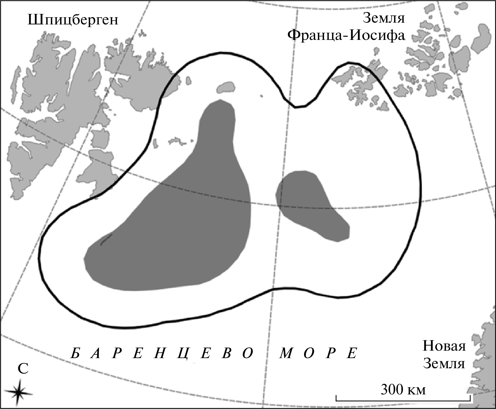
Рисунок из работы (Платонов и др., 2014).
Дрейф льда ○○○◉○○
Причины перемещений
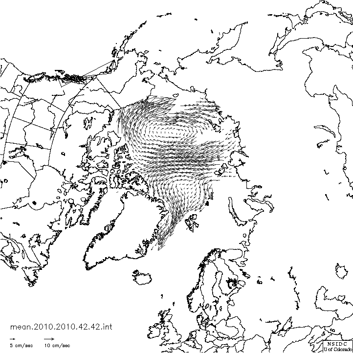
Дрейф льда.
Beaufort Gyre
Transpolar Drift System
Дрейф льда ○○○○◉○
Причины перемещений
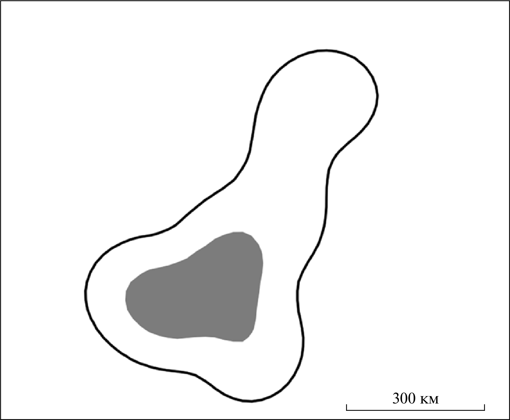
Рисунок из работы (Платонов и др., 2014).
Дрейф льда ○○○○○◉
Причины перемещений
Инструментарий
Данные и методы
Инструментарий
Спутниковая телеметрия
Argos, «Эс-Пас»
Фильтрация
Построение локаций поставщиком данных:
наименьших квадратов
фильтр Калмана
Argos-фильтры (Freitas et al., 2008; Douglas et al., 2012) для исключения локаций, вызываюших «шипы» траектории.
Построение траектории
Метод коррелированного случайного блуждания (Jonsen et al., 2020).
Характеристики
Инструментарий
Периоды активности
Скорость движения (среднесуточное смещение), прямолинейность траектории
Целенаправленное перемещение
Успешная охота и отдых
Участки обитания
Оценка площади
Минимальным выпуклым многоугольником
Методом кёрнел
Применение ◉○
Инструментарий
Функция выбора ресурсов
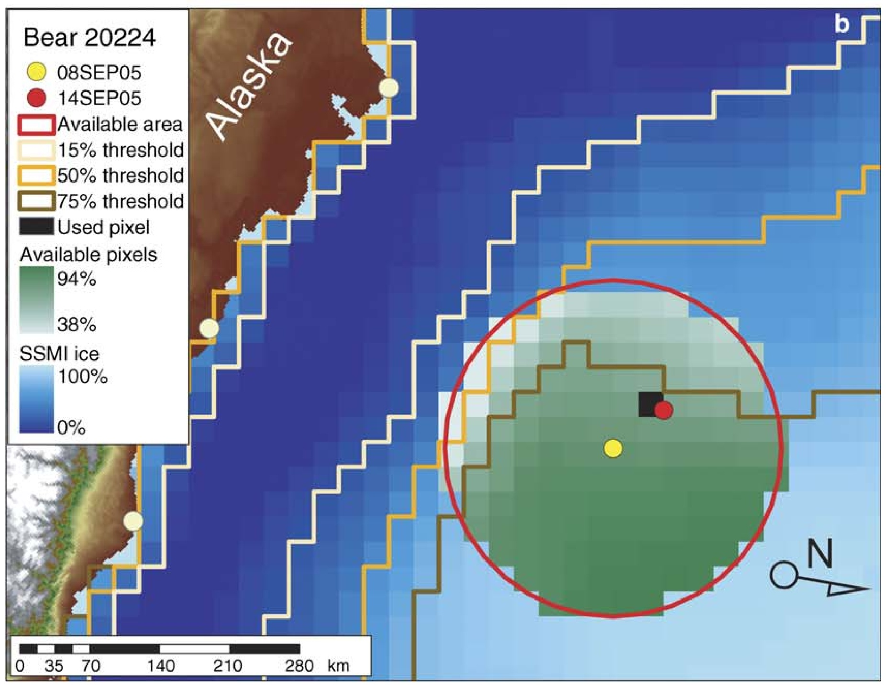
Рисунок из работы (Durner et al., 2009). Красная окружность – максимально возможное перемещение за 6 суток.
Применение ○◉
Инструментарий
Пелагический и прибрежный экотипы
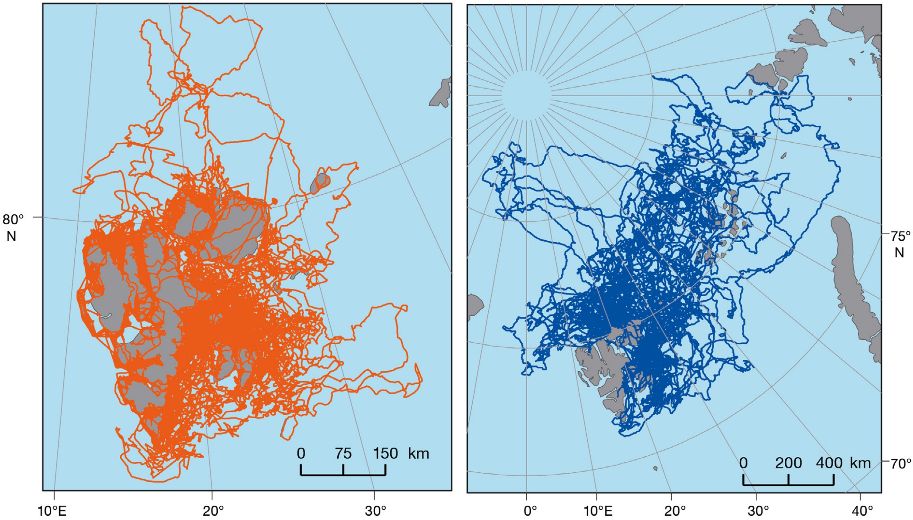
Рисунки из работы (Blanchet et al., 2020).
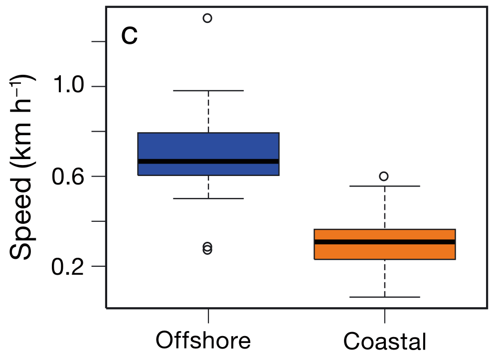
Выбор различных стратегий использование ресурсов среды.
Использованные источники
Беликов СЕ и Кочнев АА. 2021. Белый медведь. Красная книга Российской Федерации, 2-я издание. Том "Животные". ФГБУ "ВНИИ Экология". Москва. сс. 976–978. ISBN: 978-5-6047425-0-1. https://vniiecology.ru/wp-content/uploads/2022/03/krasnaya_kniga_RF_Animals_for_print.pdf#page=976 (дата обращения 11 июня 2022 г.).
Платонов НГ, Мизин ИА, Иванов ЕА, Мордвинцев ИН, Найденко СВ и Рожнов ВВ. 2019. Использование белым медведем (Ursus maritimus) местообитаний вдоль береговой линии в течение года по данным спутникового мониторинга. Исследование Земли из космоса, (3): 80–91. https://journals.eco-vector.com/0205-9614/article/view/14272. 10.31857/S0205-96142019380-91.
Платонов НГ, Рожнов ВВ, Алпацкий ИВ, Мордвинцев ИН, Иванов ЕА и Найденко СВ. 2014. Оценка перемещений белого медведя с учетом дрейфа льда. Доклады Академии наук: Общая биология, 456(3): 366–369. http://bear.sevin-expedition.ru/netcat_files/146/81/Platonov_2014_2.pdf. 10.7868/S0869565214150249.
Рожнов ВВ, Платонов НГ, Мордвинцев ИН, Найденко СВ, Иванов ЕА и Ершов РВ. 2014. Перемещения радиомеченых самок белого медведя (Ursus maritimus) на острове Земля Александры (архипелаг Земля Франца-Иосифа) в безледный период осенью 2011 г. Зоологический журнал, 93(11): 1354–1368. ISSN: 0044-5134. http://elibrary.ru/item.asp?doi=10.7868/S0044513414080091. 10.7868/S0044513414080091.
Рожнов ВВ, Платонов НГ, Найденко СВ, Мордвинцев ИН и Иванов ЕА. 2017. Перемещение самки белого медведя в Карском море в период летнего таяния льда. Доклады Академии наук, (3): 359–363. 10.7868/S0869565217030276.
Amstrup SC, Durner GM, McDonald TL, Mulcahy DM and Garner GW. 2001. Comparing movement patterns of satellite-tagged male and female polar bears. Canadian Journal of Zoology, 79(12): 2147–2158. http://pubs.er.usgs.gov/publication/70023089 (accessed 04 January 2018). 10.1139/cjz-79-12-2147.
Blanchet M, Aars J, Andersen M and Routti H. 2020. Space-use strategy affects energy requirements in Barents Sea polar bears. Marine Ecology Progress Series, 639: 1–19. 10.3354/meps13290.
Douglas DC, Weinzierl R, Davidson SC, Kays R, Wikelski M and Bohrer G. 2012. Moderating Argos location errors in animal tracking data. Methods in Ecology and Evolution, 3(6): 999–1007. 10.1111/j.2041-210x.2012.00245.x.
Durner GM, Douglas DC, Nielson RM, Amstrup SC, McDonald TL, Stirling I, Mauritzen M, Born EW, Wiig Ø, DeWeaver E, Serreze MC, Belikov SE, Holland MM, Maslanik J, Aars J, Bailey DA and Derocher AE. 2009. Predicting 21st-century polar bear habitat distribution from global climate models. Ecological Monographs, 79(1): 25–58. ISSN: 1557-7015. 10.1890/07-2089.1.
Freitas C, Lydersen C, Fedak MA and Kovacs KM. 2008. A simple new algorithm to filter marine mammal Argos locations. Marine Mammal Science, 24(3): 315–325. 10.1111/j.1748-7692.2007.00180.x.
Jonsen ID, Patterson TA, Costa DP, Doherty PD, Godley BJ, Grecian WJ, Guinet C, Hoenner X, Kienle SS, Robinson PW, Votier SC, Whiting S, Witt MJ, Hindell MA, Harcourt RG and McMahon CR. 2020. A continuous-time state-space model for rapid quality control of argos locations from animal-borne tags. Movement Ecology, 8(1). ISSN: 2051-3933. http://dx.doi.org/10.1186/s40462-020-00217-7. 10.1186/s40462-020-00217-7.
Muggeo VMR. 2003. Estimating regression models with unknown break‐points. Statistics in Medicine, 22(19): 3055–3071. ISSN: 1097-0258. http://dx.doi.org/10.1002/sim.1545. 10.1002/sim.1545.
Rode KD, Olson J, Eggett D, Douglas DC, Durner GM, Atwood TC, Regehr EV, Wilson RR, Smith T and Martin MSt. 2018. Den phenology and reproductive success of polar bears in a changing climate. Journal of Mammalogy, 99(1): 16–26. 10.1093/jmammal/gyx181.
US NIC. 2022. Daily Arctic Marginal Ice Zone (MIZ) and Overlay Shapefile. U.S. National Ice Center. https://usicecenter.gov/Products/ArcticData (accessed 05 April 2022).
Исполнители
Постоянно действующая экспедиция РАН по изучению животных Красной книги Российской Федерации и других особо важных животных фауны России, Программа изучения белого медведя в Российской Арктике:
В. Рожнов, С. Найденко, И. Мордвинцев, Е. Иванов, Н. Платонов
Благодарности
Русское географическое общество
Национальный парк «Русская Арктика»
ПАО «НК «Роснефть»
Соблюдение этических стандартов
Все манипуляции с белыми медведями выполнены в соответствии с протоколом № 37 от 25 мая 2020 г. Комитета по этике ИПЭЭ РАН.
Заимствованные изображения
Постоянно действующая экспедиция РАН
Платонов Н. Г., Кабинет методов ДЗЗ и тематического дешифрирования ИПЭЭ РАН. platonov@sevin.ru
P.S. Экология перемещения исследователей белого медведя
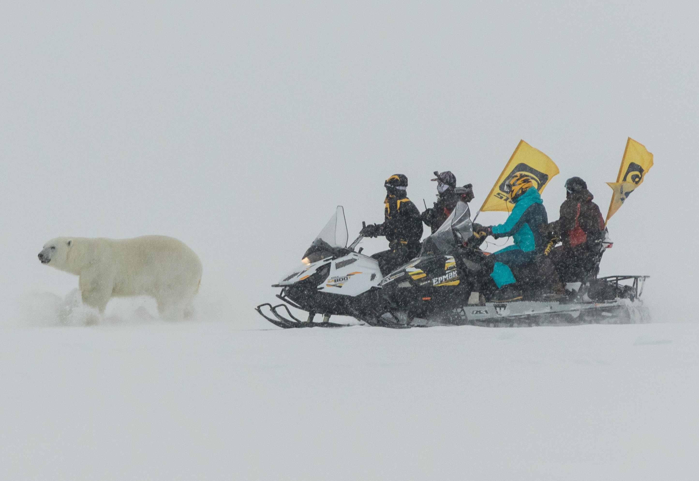
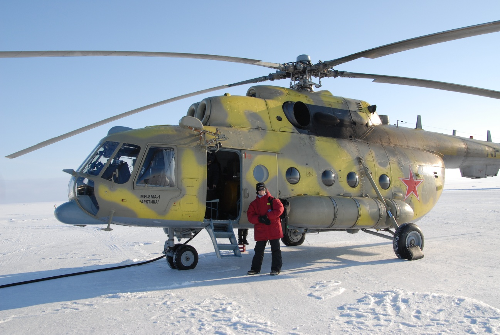
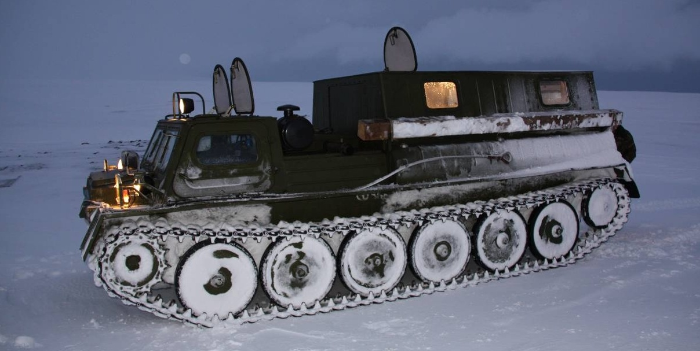

Н. Платонов: Экология перемещений белого медведя: лёд, снег и вода
Уведомление
заменить фото обхвата на фото длины